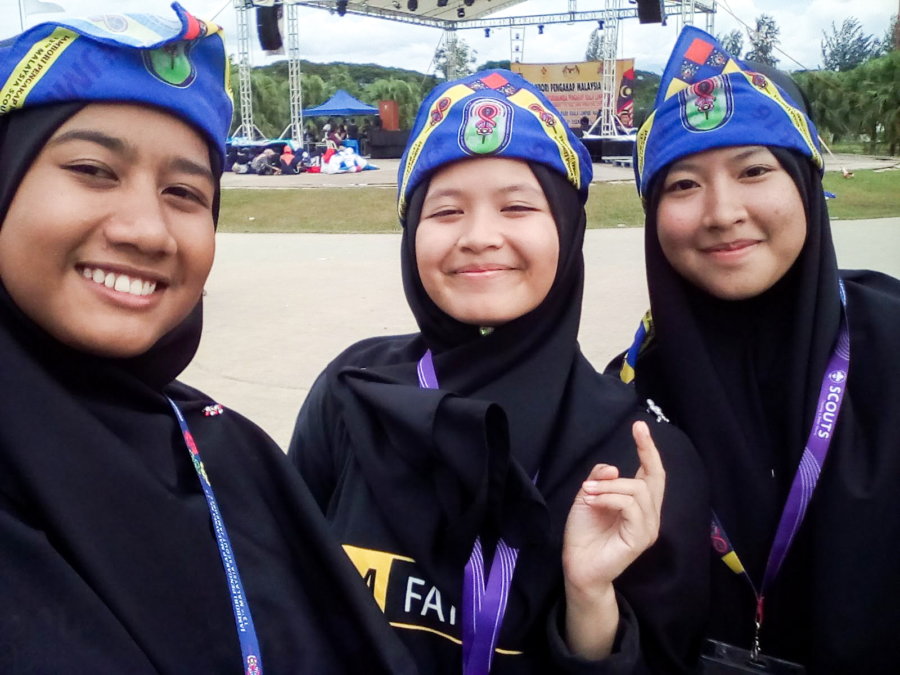
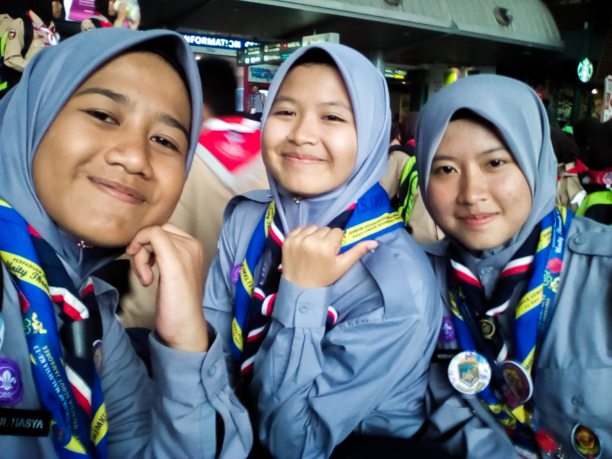
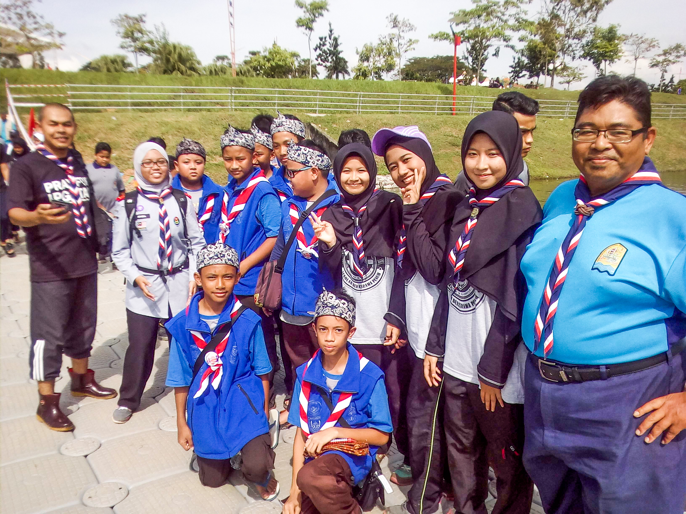
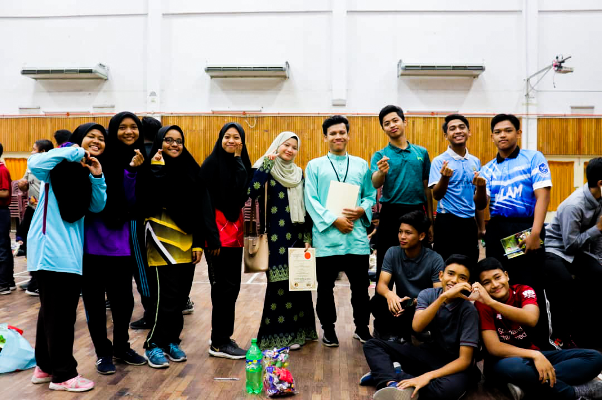
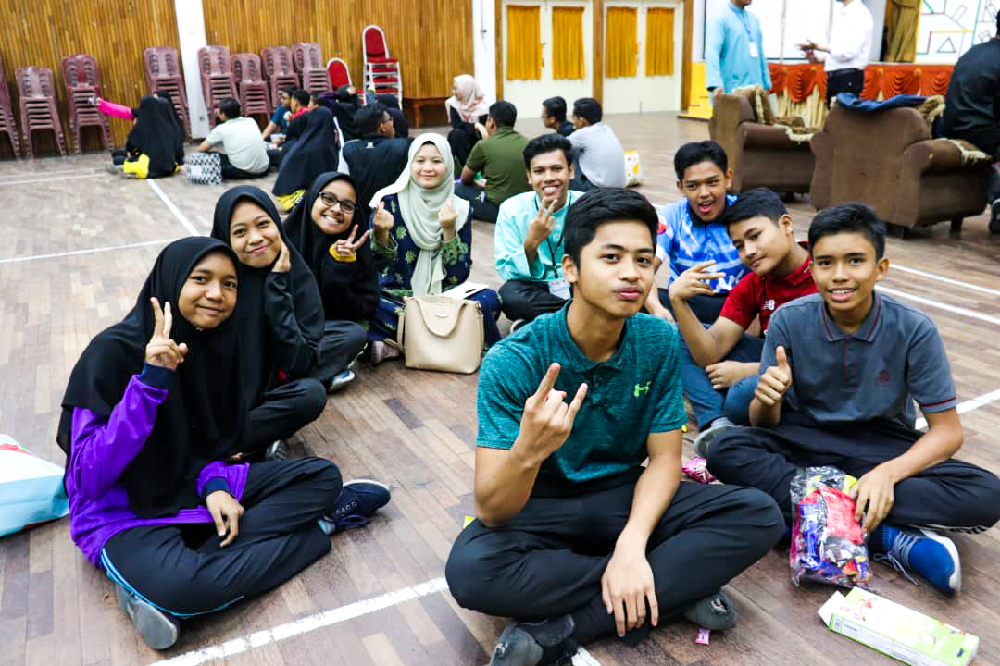

Malaysia International Scout Jamboree Kuala Lumpur 2016 |
| On 2016, I have joined the Kuala Lumpur International Scout Jamboree 2016. This program is conducted to gather Scouts from Malaysia and beyond,
create a network of brotherhood and friendship in Scouting at all levels – locally and internationally. There are many interesting activities and program I have
experienced by joining this Jamboree. Furthermore, I also have met many new people including the scouts from the other countries such as Indonesia,
India, Thailand, and China.
 |
Alumni Programs With Juniors |
| I am volunteers to be a facilitators during our alumni programs with our juniors. This programs lasts for 3 days 2 nights are required all of the form 2 and form 4 students
to joined it. This programs are designed for them because as a preparation to face the PT3 and SPM examination for the next year. There are many interesting and
beneficial activities to attract the interests of these students so that they are feel happy attending this program. I am so happy and enjoyed in joining this programs.
I learned a lot of communication skills and knowledge to shared to my juniors.
 |